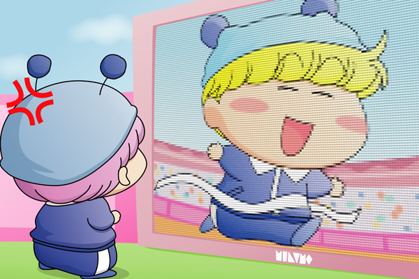

北京オリンピックの熱気もだいぶ冷めてしまいましたが、『ムルモ屋本舗版 フェアリンピック』の記事を続けたいと思います。今回は(2)となります。
今回からフェアリンピック本戦になります。その前に皆さんにお詫びを。選択肢に(1)で予選落ちになったヤシチを誤って含めてしまいました。途中まで予選通過者を上位12位までにしていて、都合により途中で10位までに変更したためです。それと投票のタイトルも分かりにくいですが、団体のリレー競技のアンカー走者を指していました。。
その中で１位に選ばれたのは・・・ダントツでミルモ！足が速いからなどの理由ではなくて、頼れる主人公だからという理由が大きいですね。しかし主人公ゆえに狙われやすいのもまた事実。ミルモが駆け抜ける最後の直線でワルモ団からの嫌がらせが待っていそうです（そしてミルモも見事にハマってしまう…）。果たしてミルモたちは金メダルをゲット出来たのかどうか、これは皆さんのご想像にお任せします～。［ コメント一覧］
ミルモ＆ムルモ(8)

ムルモ「ボクだってがんばって走ったのに・・・。
面白くないでしゅ！！」
第３走者あたりのヤマネが他と大差をつける走りをして、そのリードのおかげで何とかミルモが１位でフィニッシュ・・・という光景を私は思い浮かべました。そしてゴールした瞬間はリプレイ映像が何度も何度もテレビで放送されることになったりして・・・（途中の走者はほとんど放送されない）。そんな映像を何度も見せられると、兄と同じく目立ちたがり屋のムルモは間違いなく機嫌が悪くなるはず。後で何かにつけては兄にしょっかくビームを喰らわすのではないでしょうか。
絵の方はテレビの画面らしくミルモをドット絵風にアレンジしてみましたが、ギザギザの目立つ解像度の低いテレビになってしまいました(笑)。Illustratorのテクスチャと3D回転機能を駆使していて、描いている最中はCPUのファンがうなりっぱなしですごいことになっていました。
(3)へ続く
(2008/10/23)